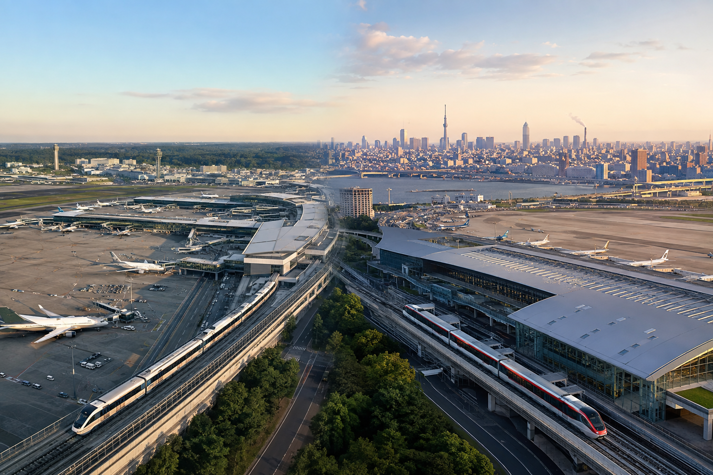
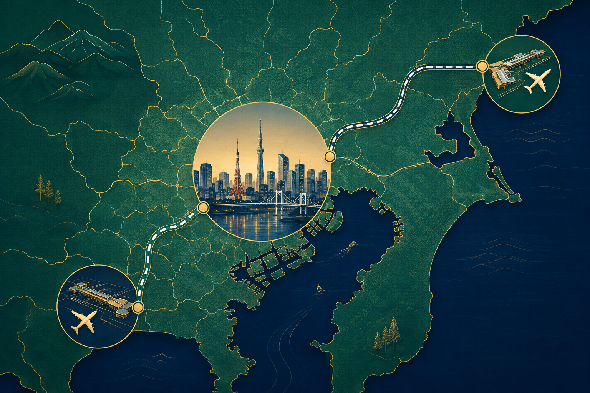
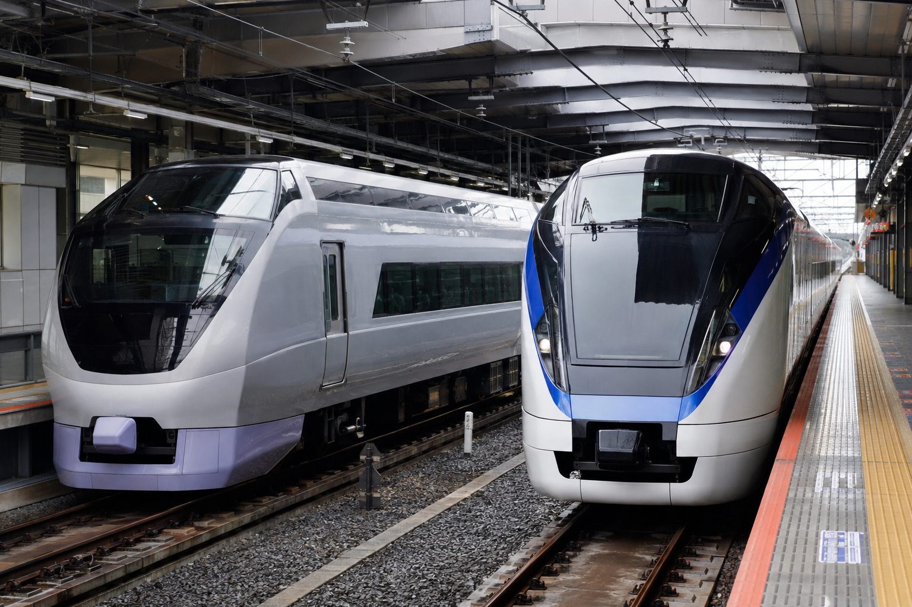

Narita vs Haneda Airport: Which Tokyo Airport Is Better
Tokyo has two major international airports: Haneda Airport (HND) and Narita International Airport (NRT). Both can work well for a first trip to Japan, but they are not equally convenient for every traveler.
For most visitors staying in central Tokyo, I would choose Haneda when the flight price, schedule, and airline are reasonably similar. Haneda is much closer to central Tokyo, which usually means a shorter and easier airport transfer after a long international flight. Narita is farther away, but it has excellent rail connections and may offer a better flight schedule, lower fare, or airline option.
The best airport is therefore not simply “Haneda is better.” Compare the total journey from your home airport to your Tokyo hotel, including airfare, arrival time, baggage, and ground transport. A cheaper direct flight into Narita can easily be better than an expensive or inconvenient connection into Haneda.
Narita vs Haneda at a Glance

| Factor | Haneda Airport | Narita Airport |
|---|---|---|
| Airport code | HND | NRT |
| Location | Tokyo | Chiba Prefecture, outside central Tokyo |
| Central Tokyo access | Faster for most areas | Longer |
| Main rail options | Keikyu , Tokyo Monorail | Narita Express, Skyliner , other rail services |
| Best for | Convenience and shorter transfers | Flight choice, some lower fares and international routes |
| International terminals | Terminal 2 and Terminal 3 | Terminals 1, 2 and 3 |
| Late arrival convenience | Usually better | Requires more careful transport planning |
| First-time visitor preference | Usually my first choice | Still a good airport with the right flight |
Which Tokyo Airport Is Better?
My default answer is:
Choose Haneda if everything else is close.
For example, imagine these two flights:
Flight A
Arrives at Haneda at 4:00 PM and costs $900.
Flight B
Arrives at Narita at 4:30 PM and costs $880.
If the flight quality is similar, I would usually choose Haneda.
The $20 saving does not compensate for the additional airport transfer time and effort.
But now imagine:
Flight A
Haneda with one connection for $1,150.
Flight B
Direct to Narita for $850.
I would seriously consider Narita.
Airport location is only one part of the decision.
Where Is Haneda Airport?
Haneda Airport is inside Tokyo and much closer to the main city districts than Narita.
That makes it especially convenient for travelers staying around areas such as:
- ✓Shinagawa
- ✓Shibuya
- ✓Shinjuku
- ✓Tokyo Station
- ✓Southern Tokyo
Two main rail systems connect the airport with the city:
- ✓Keikyu Line
- ✓Tokyo Monorail
From there, you can connect to the wider Tokyo rail system.
How Fast Is Haneda to Central Tokyo?
The exact time depends on your terminal and hotel.
Current Keikyu schedules list journeys from Haneda Airport to Shinagawa in about 14 minutes, with through or connecting routes reaching areas such as Shibuya and Shinjuku in roughly half an hour under suitable conditions.
Tokyo Monorail also provides fast access toward Hamamatsucho, where you can connect to JR lines.
This does not mean you will reach your hotel in 14 minutes.
You still need to include:
- ✓Waiting time
- ✓Transfers
- ✓Walking
- ✓Finding the hotel
- ✓Luggage
But Haneda gives you a strong starting point.
Where Is Narita Airport?
Narita International Airport is outside Tokyo in Chiba Prefecture.
This is why travelers often hear that Narita is “far from Tokyo.”
It is farther away, but the transfer is well organized.
Narita has several useful railway options, including:
- ✓Keisei Skyliner
- ✓Narita Express
- ✓Keisei Access Express
- ✓Other JR and Keisei services
There are also airport buses and taxis.
The important decision is matching the transport to your hotel location.
Narita Is Not a Bad Airport Because It Is Farther Away
This is worth making clear.
Narita works very well for international travel.
The problem is not the airport itself.
The main disadvantage is simply the extra time needed to reach many central Tokyo neighborhoods.
If your flight into Narita is:
- ✓Direct
- ✓Much cheaper
- ✓Better timed
- ✓Operated by your preferred airline
I would not reject it just because Haneda is closer.
How Fast Is Narita to Tokyo?
The time depends heavily on where you stay.
The Keisei Skyliner can travel between Narita Airport Terminal 2・3 Station and Nippori in as little as about 36 minutes.
That is fast, but Nippori is not every traveler's final destination.
You may still need another train to places such as:
- ✓Shinjuku
- ✓Shibuya
- ✓Tokyo Station
- ✓Your hotel neighborhood
The Narita Express, often called N'EX, provides direct service to major areas including:
- ✓Tokyo Station
- ✓Shinagawa
- ✓Shibuya
- ✓Shinjuku
- ✓Yokohama
Current schedules put many Narita-to-Tokyo journeys around the one-hour range, depending on the terminal and train.
Haneda vs Narita: Do Not Compare Airport Train Time Alone

Imagine:
Haneda → Shinagawa: short train ride
but your hotel is in northern Tokyo.
Or:
Narita → Nippori by Skyliner
and your hotel is beside Ueno.
In the second example, Narita may not feel nearly as inconvenient as the airport distance suggests.
Always compare:
Airport terminal → actual hotel
not:
Airport → random central Tokyo station
This gives you a much better travel decision.
Which Airport Is Better for Shinjuku?
For most travelers, I would prefer Haneda if flight options are similar.
Keikyu plus a suitable transfer can get you toward Shinjuku efficiently.
Narita also has an advantage here, though: the Narita Express serves Shinjuku directly on eligible services.
So the choice becomes:
Haneda
Shorter overall distance, but you may transfer.
Narita
Longer journey, but some N'EX services provide a direct airport-to-Shinjuku connection.
If you have large luggage, a direct train can sometimes matter more than shaving a few minutes off the journey.
Which Airport Is Better for Shibuya?
Again, Haneda normally wins for convenience.
Its shorter distance from central Tokyo makes the arrival easier for most first-time travelers.
But Narita Express services can also reach Shibuya directly.
If your Narita flight is much better, that direct connection can make NRT perfectly reasonable.
Which Airport Is Better for Ueno?
This is where Narita becomes more competitive.
Keisei Skyliner connects Narita with Nippori and Keisei Ueno.
If your hotel is around:
- ✓Ueno
- ✓Nippori
- ✓Asakusa side of Tokyo
- ✓Northeastern central Tokyo
Narita's ground transfer can be more convenient than you may expect.
I still would not choose Narita only because of this.
But hotel location reduces Haneda's advantage.
Which Airport Is Better for Shinagawa?
Haneda is the clear starting choice if flights are comparable.
Keikyu provides very fast airport access to Shinagawa.
This is also useful if your Japan itinerary later uses the Tokaido Shinkansen toward:
- ✓Kyoto
- ✓Shin-Osaka
- ✓Western Japan
A Shinagawa hotel can work particularly well for a short first night after a late arrival or before an early departure from Haneda.
Which Airport Is Better for Tokyo Station?
Both are workable.
Haneda offers a shorter overall airport-to-city distance, usually with a rail transfer depending on your route.
Narita Express serves Tokyo Station directly.
This creates an important choice:
Haneda = closer
Narita Express = potentially simpler direct luggage journey
For a traveler carrying several suitcases, the direct route may be attractive even if it takes longer.
Which Airport Is Better for a First-Time Visitor?
If you show me two similar international flights, I would normally choose:
Haneda
The reasons are simple:
- ✓Shorter airport transfer
- ✓Easier arrival after a long flight
- ✓Less risk from a late arrival
- ✓Faster access to many Tokyo neighborhoods
- ✓Lower taxi exposure if trains stop running
- ✓Easier final departure in many cases
But I would never pay a very large premium just to land at Haneda.
How Much More Would I Pay for Haneda?
There is no fixed number because the answer depends on:
- ✓Number of travelers
- ✓Flight duration
- ✓Connections
- ✓Arrival time
- ✓Hotel location
- ✓Ground transport cost
If Haneda is only slightly more expensive, I would normally take it.
If Narita saves hundreds of dollars or avoids a long connection, I would take Narita and plan the airport transfer properly.
Flight Schedule Matters More Than Airport Name
Consider:
Haneda arrival at 11:30 PM
versus
Narita arrival at 3:00 PM
The Narita flight may actually create the easier first day.
A late Haneda landing is closer to Tokyo, but you still need:
- ✓Immigration
- ✓Bags
- ✓Customs
- ✓Ground transport
Never compare airports without comparing arrival times.
Direct Flight vs Better Airport
For me, a good direct flight usually has strong value.
If the choice is:
Direct flight to Narita
versus
Long connection to Haneda
I would usually lean toward Narita unless there is another major difference.
Every flight connection adds:
- ✓Travel time
- ✓Delay risk
- ✓More airport waiting
- ✓More fatigue
Saving some ground-transfer time in Tokyo may not compensate for several extra hours in the air-travel journey.
Narita Has Strong International Flight Choice
Narita remains a major international gateway.
As of 2026, Narita Airport's published network includes international routes across a wide range of countries and cities.
That means some travelers may find:
- ✓More airline choices
- ✓Different departure cities
- ✓Better fares
- ✓Low-cost carrier options
- ✓More convenient schedules
at Narita.
This is one reason the airport remains highly relevant even though Haneda is closer to Tokyo.
The Best Rule Before Booking
Do not start by filtering out Narita.
Search flights to both NRT and HND.
Then compare:
- ✓Total airfare
- ✓Direct vs connecting flight
- ✓Departure time
- ✓Arrival time
- ✓Checked baggage allowance
- ✓Hotel location
- ✓Airport transfer
- ✓Total door-to-door travel time
Only then choose the airport.
For most first-time visitors, Haneda wins the convenience comparison.
Narita can easily win the total-trip comparison when the flight itself is better.
Haneda Airport Transportation Options
Haneda is easier for most central Tokyo stays because the airport is much closer to the city.
Your main public transport options include:
- ✓Keikyu Line
- ✓Tokyo Monorail
- ✓Airport buses
- ✓Taxis
- ✓Private transfers
The best choice depends on where your hotel is located.
Keikyu Line From Haneda
Keikyu is useful for areas such as:
- ✓Shinagawa
- ✓Parts of southern Tokyo
- ✓Connections toward central Tokyo
- ✓Some through-services onto other railway lines
If your hotel is near Shinagawa, this can be one of the easiest airport transfers in Tokyo.
It is also useful if you plan to take the Tokaido Shinkansen later from Shinagawa toward Kyoto or Osaka.
Tokyo Monorail From Haneda
The Tokyo Monorail connects Haneda with Hamamatsucho.
From there, you can continue using JR or other local transport.
This can work well for hotels around:
- ✓Hamamatsucho
- ✓Tokyo Station side of the city
- ✓Areas connected easily by JR from Hamamatsucho
You do not need to decide that Keikyu is always better.
Compare your exact hotel route.
Airport Buses From Haneda
Airport buses can be useful when they stop:
- ✓At your hotel
- ✓Near your hotel
- ✓At a major bus terminal close to your accommodation
A bus can be slower than rail, but it may remove several train transfers.
This matters if you have:
- ✓Large suitcases
- ✓Children
- ✓Limited mobility
- ✓Several bags
For some travelers, one direct bus is better than two faster trains.
Taxis From Haneda
Haneda is much closer to central Tokyo, so taxis become more realistic here than from Narita.
They can make sense if:
- ✓Several travelers share the fare
- ✓You arrive very late
- ✓You have heavy luggage
- ✓Public transport has stopped
- ✓Your hotel is difficult to reach
I still would not use a taxi automatically.
Rail and airport buses are usually much cheaper.
Narita Airport Transportation Options
Narita offers several strong transport choices despite being farther from Tokyo.
The main options include:
- ✓Keisei Skyliner
- ✓Narita Express
- ✓Other Keisei services
- ✓Airport buses
- ✓Taxis
- ✓Private transfers
The best one depends strongly on where you are staying.
Keisei Skyliner From Narita
The Skyliner is especially useful for travelers staying around:
- ✓Ueno
- ✓Nippori
- ✓Northeastern Tokyo
- ✓Areas with easy onward connections from those stations
It provides one of the fastest rail links from Narita toward central Tokyo.
If your hotel is near Ueno, Narita may feel much easier than a simple airport-distance comparison suggests.
Narita Express
The Narita Express can be useful if you want a direct route toward major areas such as:
- ✓Tokyo Station
- ✓Shinagawa
- ✓Shibuya
- ✓Shinjuku
The journey is longer than Haneda airport access, but fewer transfers can be valuable.
A direct train can be especially attractive after a long international flight.
Airport Buses From Narita
Airport buses can be a good option when:
- ✓Your hotel has a direct stop
- ✓You have large luggage
- ✓You want to avoid rail transfers
- ✓Your destination is easier by road
Always check current schedules and drop-off locations.
Do not choose a bus only because it looks easier on paper if it leaves you far from your hotel.
Narita Taxi Costs Can Be High
This is one of Narita's biggest practical disadvantages.
Because the airport is far from central Tokyo, a taxi can cost much more than a normal Tokyo city ride.
For one or two budget-conscious travelers, rail or airport bus is usually more sensible.
A taxi becomes more reasonable if:
- ✓Several travelers split the cost
- ✓You arrive after public transport options become limited
- ✓You have special mobility needs
- ✓Convenience matters more than price
Which Airport Is Better for Late Arrivals?
Usually:
Haneda
This is one of the strongest reasons I prefer HND when two flights are similar.
A late international arrival can take time because of:
- ✓Immigration
- ✓Baggage
- ✓Customs
- ✓Walking through the terminal
If your flight lands late, your actual airport exit time may be much later.
Haneda's shorter distance gives you more options.
Narita Late Arrivals Need More Planning
A late Narita flight is not automatically a problem.
But you should check:
- ✓Last train times
- ✓Airport bus schedule
- ✓Hotel reception hours
- ✓Taxi cost
- ✓Possible airport hotel options
Do this before booking the flight.
Do not land late at Narita and only then start researching how to reach Shinjuku.
Which Airport Is Better for Early Departures?
Again, Haneda often has the advantage because of the shorter distance.
If you have an early international flight, staying in central Tokyo may still allow a manageable airport journey.
Narita may require:
- ✓Earlier departure from the hotel
- ✓Airport hotel stay
- ✓More transport planning
But the exact answer depends on the flight time and your hotel.
Should You Stay Near the Airport on the First Night?
Usually not if you land at a reasonable time.
For most travelers, I would rather continue to the Tokyo neighborhood where I actually want to stay.
An airport hotel becomes more useful when:
- ✓Arrival is very late
- ✓You are exhausted
- ✓Public transport is limited
- ✓You have an early onward flight
- ✓You are connecting through Tokyo rather than staying
Should You Stay Near the Airport Before Departure?
It can make sense for very early flights.
This is more common with Narita because of the longer distance.
Before booking an airport hotel, compare:
Central Tokyo hotel + early transport
versus
Airport-area hotel + easier morning
The second option can reduce departure-day stress.
Which Airport Is Better if You Are Going Straight to Kyoto?
If you land in Tokyo and immediately plan to continue west, Haneda generally gives you the easier starting point.
One possible route is:
Haneda → Shinagawa → Shinkansen toward Kyoto
This can be much cleaner than traveling from Narita across the Tokyo area before joining the Tokaido Shinkansen.
That said, after a long international flight, I would usually prefer spending the first night in Tokyo unless your itinerary strongly requires continuing.
Which Airport Is Better if You Are Going Straight to Osaka?
Again, Haneda is generally easier for joining the Shinkansen corridor.
But compare domestic flight options too.
If you arrive internationally and have a convenient domestic connection to Osaka, flying may sometimes work.
For most first-time itineraries, however, I would not create an immediate extra transfer unless it saves meaningful time.
Which Airport Is Better if You Are Staying in Tokyo Only?
Haneda.
For a Tokyo-only trip, its location gives it a clear convenience advantage.
You avoid spending more of a short city break traveling between the airport and hotel.
Narita still makes sense if the flight itself is much better.
Which Airport Is Better for a 7-Day Japan Trip?
I would favor Haneda more strongly on a short trip.
Seven days gives you limited usable time.
Saving airport-transfer time matters more.
If the flight choices are close, Haneda is the better fit.
Which Airport Is Better for a 10-Day Trip?
Haneda still wins on convenience.
But by 10 days, I would be more willing to accept Narita if:
- ✓The flight is direct
- ✓The fare is better
- ✓The schedule is better
- ✓The airline is better
The extra airport-transfer time becomes a smaller percentage of the total trip.
Which Airport Is Better for a 14- or 21-Day Trip?
On a longer trip, the airport location matters less than the quality of the international flight.
For a three-week trip, saving several hundred dollars by landing at Narita may easily be worth another hour or so of ground transport.
This is why airport choice should change with trip length.
Haneda Arrival + Kansai Departure
For many first-time itineraries, one of the cleanest combinations is:
Fly into Haneda
then
Fly home from Kansai International Airport
This works well for routes such as:
Tokyo → Kyoto → Osaka
or
Tokyo → Kyoto → Hiroshima → Osaka
You avoid returning to Tokyo at the end.
Narita Arrival + Kansai Departure
This also works.
You simply accept a longer arrival transfer at the start.
If the Narita flight is significantly better, this can still be a very efficient overall trip.
The important part is avoiding unnecessary return travel to Tokyo later.
Should You Use the Same Tokyo Airport Both Ways?
Not necessarily.
You might find:
Arrival: Haneda
Departure: Narita
or the reverse.
That can be fine.
But check the departure-day hotel-to-airport route carefully.
The convenience of landing at Haneda does not help if your return flight leaves from Narita and you forgot to plan for it.
Airport Switching During a Connection
This is one situation where you need to be very careful.
A flight itinerary may sometimes require:
Arrive at Narita
then
Depart from Haneda
or the reverse.
These airports are far apart.
That is not a normal terminal transfer.
You need enough time to:
- ✓Clear immigration if required
- ✓Collect baggage if required
- ✓Travel across the Tokyo region
- ✓Check in again
- ✓Complete security
I would avoid a tight Narita-to-Haneda connection.
Narita vs Haneda With Large Luggage
Haneda normally wins because the total journey is shorter.
But a direct Narita Express or airport bus can sometimes be easier than a Haneda route requiring several changes.
When you have heavy luggage, compare:
Number of transfers
not just travel time.
Narita vs Haneda for Families
I would lean toward Haneda.
The shorter transfer reduces:
- ✓Time after a long flight
- ✓Child fatigue
- ✓Luggage handling
- ✓Train transfers
However, a direct Narita flight can still beat a connecting Haneda flight for a family.
Always compare the complete journey.
Narita vs Haneda for Budget Travelers
Narita may become more attractive because flight savings can be larger than ground transport costs.
A budget traveler should compare:
Airfare saving - extra airport transport cost
If Narita saves $200 and the extra ground transport costs only a fraction of that, Narita may be the clear winner.
Narita vs Haneda for Business Travelers
Haneda often has the advantage because time and convenience matter more.
Shorter access to central Tokyo can reduce:
- ✓Arrival time
- ✓Transfer uncertainty
- ✓Taxi cost
- ✓Departure-day stress
This is one reason Haneda can justify a higher fare for some travelers.
What About Airport Luggage Forwarding?
Both airports support luggage-delivery options through participating services.
This can be useful if you do not want to carry large suitcases into Tokyo.
For example:
Airport → send suitcase to hotel → travel into the city with small bag
or before departure:
Hotel → airport luggage counter
The full process belongs in Luggage Forwarding in Japan: How Takkyubin Works.
Which Airport Has Better Public Transport?
I would not say one has “better” public transport.
Both are well connected.
The difference is:
Haneda has the better location.
Narita compensates with strong dedicated airport rail services.
That distinction is more useful than simply comparing the number of train lines.
My Airport Choice by Tokyo Neighborhood
| Tokyo Area | My Starting Preference |
|---|---|
| Shinagawa | Haneda |
| Shibuya | Haneda |
| Shinjuku | Haneda |
| Tokyo Station | Haneda , but N'EX is useful |
| Ueno | Closer comparison; Narita Skyliner is strong |
| Nippori | Narita becomes very competitive |
| Southern Tokyo | Haneda |
| Airport hotel only | Depends on flight |
These are starting preferences, not rules.
Flight quality still matters more than a small ground-transport advantage.
Haneda vs Narita: Which Airport Is Cheaper Overall?
The cheaper airfare is not always the cheaper trip.
You need to compare:
- ✓Flight price
- ✓Airport transfer
- ✓Number of travelers
- ✓Luggage
- ✓Taxi risk
- ✓Arrival time
- ✓Possible airport hotel
- ✓Time lost in transit
For example, a Narita flight may save money on airfare but require more ground transport.
A Haneda flight may cost more but reduce transfer time and make a taxi less expensive if you arrive late.
Compare the full cost, not just the ticket price.
How Much Extra Ground Time Does Narita Add?
There is no single answer because your hotel matters.
A traveler staying near Ueno or Nippori may have a very efficient Narita transfer.
A traveler staying in Shibuya or southern Tokyo will often feel Haneda's location advantage more clearly.
When comparing flights, use:
Airport terminal → hotel door
rather than general “airport to Tokyo” numbers.
Which Airport Is Less Stressful After a Long Flight?
Usually Haneda.
The shorter city transfer means fewer total travel hours after landing.
This matters more if:
- ✓You have already flown 10–15 hours
- ✓You have children
- ✓You have several bags
- ✓You are jet-lagged
- ✓Your arrival is late
For a first Japan trip, reducing arrival-day stress has real value.
Which Airport Is Better if Your Hotel Is Not Near a Station?
Haneda still often wins because it gives you more flexibility.
You might use:
Airport train → short taxi
instead of paying for a very long taxi from Narita.
But check airport buses too.
A direct bus from Narita to a hotel area can sometimes make the longer airport distance much easier.
Which Airport Is Better for a Late-Night Taxi?
Haneda.
This is one of the clearest comparisons.
If rail and bus options become limited, the distance from Narita can make a taxi very expensive.
Haneda's location reduces that risk.
If you are considering a flight landing very late at Narita, check the transport plan before booking.
Which Airport Is Better for a Very Early Morning Flight?
Haneda usually has the advantage.
You may be able to reach it earlier and more easily from central Tokyo.
For a very early Narita departure, I would compare:
- ✓First train
- ✓Airport bus
- ✓Taxi
- ✓Airport-area hotel
Do not assume central Tokyo transport will operate early enough for your flight.
What If You Arrive During Rush Hour?
Both airports can still work, but commuter trains may become busy.
If you have large luggage, consider:
- ✓Airport express train
- ✓Airport bus
- ✓A route with fewer transfers
- ✓Waiting briefly before entering a crowded commuter section
Do not choose the absolute fastest route if it requires carrying large bags through several packed train changes.
Narita Express vs Skyliner: Which Is Better?

Neither is always better.
Choose based on where you are going.
Skyliner Is Strong For:
- ✓Nippori
- ✓Ueno
- ✓Easy onward connections from those areas
- ✓Fast access toward northeastern central Tokyo
Narita Express Is Strong For:
- ✓Tokyo Station
- ✓Shinagawa
- ✓Shibuya
- ✓Shinjuku
- ✓Direct major-station access
The better train is the one that reduces your full hotel transfer.
Keikyu vs Tokyo Monorail From Haneda
Again, use hotel location.
Keikyu Is Often Useful For:
- ✓Shinagawa
- ✓Through-services toward parts of Tokyo
- ✓Connections to the Tokaido Shinkansen corridor
Tokyo Monorail Is Useful For:
- ✓Hamamatsucho
- ✓Easy JR connections from there
Do not choose based on which airport train appears more famous.
Airport Bus vs Train: Which Should You Pick?
Use the train when:
- ✓Your hotel is close to a station
- ✓You want predictable travel time
- ✓You have manageable luggage
- ✓The train route is simple
Use an airport bus when:
- ✓It stops near the hotel
- ✓You have several suitcases
- ✓You want fewer transfers
- ✓Carrying luggage through stations is difficult
A bus may take longer but still be easier.
Which Airport Is Better During Bad Weather?
There is no reliable universal winner.
Weather can affect:
- ✓Flights
- ✓Airport trains
- ✓Roads
- ✓Airport buses
If severe weather is expected, monitor both airline and transport updates.
The important point is to leave buffer time rather than assuming one airport will always handle weather better.
Which Airport Is Better During a Short Tokyo Stopover?
Haneda is usually much better.
If you only have limited time in Tokyo, the shorter city transfer makes it more realistic to leave the airport and spend time in the city.
Narita can still work for a longer layover, but travel time takes a larger part of the available window.
Which Airport Is Better for Connecting to a Domestic Flight?
This depends on your airline and route.
Both airports handle domestic connections, but Haneda has extensive domestic services and can be especially convenient for onward travel within Japan.
Do not assume the best Tokyo airport for staying in Tokyo is automatically the best connection airport.
Compare the actual itinerary.
Should You Choose an Airport Before Choosing a Hotel?
Usually, choose the flight first.
The flight can affect:
- ✓Arrival time
- ✓Price
- ✓Airline
- ✓Direct vs connecting travel
Then choose a Tokyo hotel area that works with:
- ✓Airport access
- ✓Sightseeing
- ✓Long-distance train plans
Do not book a worse international flight simply because you already decided on a hotel neighborhood.
Airport Choice for Different Japan Routes
Tokyo-Only Trip
Prefer Haneda if flight choices are close.
Tokyo + Kyoto
Haneda is very convenient, especially if you later leave Tokyo via Shinagawa or Tokyo Station.
Tokyo + Kyoto + Osaka
Haneda arrival plus Kansai departure is an excellent setup.
Tokyo + Kyoto + Hiroshima + Osaka
Again, Tokyo arrival plus Kansai departure avoids backtracking.
Three-Week Japan Trip
Airport convenience matters less than overall airfare and route quality because the trip is long.
When Narita Is the Better Choice
Choose Narita if it gives you a clearly better overall flight.
For example:
- ✓Much cheaper fare
- ✓Direct flight
- ✓Better airline
- ✓Better arrival time
- ✓Better baggage allowance
- ✓Better seat availability
Narita is not an airport you need to avoid.
You simply need to account for the longer ground journey.
When Haneda Is the Better Choice
Choose Haneda when:
- ✓Flight prices are close
- ✓Schedules are similar
- ✓You stay in central or southern Tokyo
- ✓Arrival is late
- ✓Departure is early
- ✓You have children
- ✓You have heavy luggage
- ✓You value convenience more than a small fare saving
This will be the stronger choice for many first-time visitors.
Common Narita vs Haneda Mistakes
Choosing Narita Only Because the Flight Is Slightly Cheaper
Include ground transport and time.
Paying a Huge Premium for Haneda
Airport convenience has value, but not unlimited value.
Ignoring Arrival Time
A 3 PM Narita arrival can be easier than an 11:30 PM Haneda arrival.
Assuming Tokyo Means Haneda
Narita is also a major Tokyo gateway.
Booking a Late Narita Flight Without Checking Last Transport
Plan the airport-to-hotel route before departure.
Confusing Airport Codes
Remember:
HND = Haneda
NRT = Narita
Forgetting Which Airport the Return Flight Uses
Your arrival and departure airports may differ.
Booking a Tight Narita-Haneda Connection
The airports are far apart.
Comparing Airport-to-City Time Instead of Airport-to-Hotel Time
Your actual destination matters.
Ignoring Luggage
A direct train or bus can be better than a faster route with several transfers.
Airport Decision Checklist
Before choosing your Tokyo airport, compare:
- ✓HND airfare
- ✓NRT airfare
- ✓Direct vs connecting flight
- ✓Departure time
- ✓Arrival time
- ✓Baggage allowance
- ✓Hotel neighborhood
- ✓Airport-to-hotel route
- ✓Transfer cost
- ✓Number of transfers
- ✓Late-night transport risk
- ✓Departure-day transport
- ✓Whether you can fly home from Kansai instead
This gives you a much better decision than choosing based only on airport reputation.
Frequently Asked Questions
Is Haneda better than Narita?
For most travelers staying in central Tokyo, Haneda is more convenient because it is much closer. Narita can still be better if the flight is cheaper, direct, or better timed.
Which Tokyo airport is closer to the city?
Haneda.
Is Narita too far from Tokyo?
No. It is farther, but fast rail and airport bus services make the transfer manageable.
Which airport is better for Shinjuku?
Haneda usually wins for overall convenience, while Narita Express can provide direct service from Narita.
Which airport is better for Ueno?
Narita becomes very competitive because of the Skyliner connection toward Nippori and Ueno.
Which airport is better for Shibuya?
Usually Haneda if flight options are similar.
Which airport is better for Tokyo Station?
Haneda is closer, while Narita Express offers a useful direct option.
Which airport is better for a first trip to Japan?
Haneda is my default choice when flight price and schedule are similar.
Is Narita cheaper than Haneda?
Airfares vary. Narita sometimes offers better fares or flight options, but you should include the extra ground transport cost.
Is Haneda better for late arrivals?
Usually yes.
Is Haneda better for early departures?
Usually yes because it is closer to central Tokyo.
Should I fly into Tokyo and out of Osaka?
For a route moving from Tokyo through Kyoto to Osaka, this can be one of the best ways to reduce backtracking.
Can I take a taxi from Narita to Tokyo?
Yes, but the long distance can make it expensive.
Can I take a train directly from Narita to Shinjuku?
Narita Express services can provide direct connections to Shinjuku on applicable trains.
Can I go directly from Haneda to Shinagawa?
Yes. Keikyu provides a fast connection.
Is Narita or Haneda better for families?
I usually prefer Haneda because of the shorter transfer, unless Narita provides a much better direct flight.
Which airport is better for budget travelers?
Narita can be better if the airfare saving is large enough to outweigh the added transport time and cost.
Final Thoughts
Haneda is the more convenient Tokyo airport for most first-time visitors, but Narita is often the better choice when it gives you a cheaper, more direct, or better-timed international flight. Compare the complete journey from your home airport to your hotel, not just the distance from the airport to central Tokyo. If everything else is similar, choose Haneda. If Narita clearly wins on the flight itself, book Narita and plan the ground transfer properly.